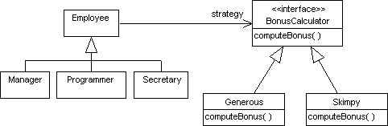

3. 디자인 패턴¶
3.1. 전략 패턴¶
스프링은 전략 패턴을 사용한다. 전략 패턴에 대해 알아보자. 예를들어 인턴, 대리, 부장이라는 Employee를 상속받은 객체가 있고 각 객체에 다른 월급을 주고 싶을때 전략 패턴이 사용된다. 이때 Salary라는 인터페이스를 연관(Association) 시킨 후 Salary를 상속 받은 Salty, Generous중 하나를 주입하는 것이다. 각 클래스의 의미는 Salty는 적은 월급 Generous는 일반적인 월급이라고 할 수 있다. 이는 전략을 주입하는것과 비슷하다.
이처럼 조건에 따라 다른 전략을 사용하고 싶을때 사용하는 패턴이다. 참고
